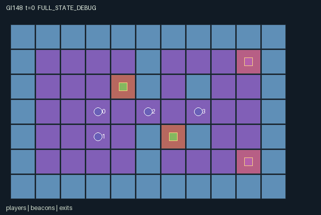

GI148 / SPATIAL
回声狩猎
侦察角色协调局部传感器、有限脉冲与实体信标；奔跑者利用烟雾、干扰与出口应对。
Original saved demonstration
Recorded native state, often authored scripts or interventions; information scope and failures are preserved in the original provenance. This is a saved demonstration, not live browser play.

Release verification episode
Untrained uniform legal actions. Actual JAX state sampled along the full original episode; full-state debug camera. No human performance or learning claim.

Run this game
crucibles play --game 148
Start Python locally, then open the address printed by the terminal. Installation, multiplayer, takeover and keyboard controls →
Objective, rewards & ending
Exact task contract
{
"objective": "Scouts coordinate local sensors, finite pulses, physical beacons and tags to capture the two player-controlled runners; runners use routes, smoke, jams and exits.",
"natural_termination": "Both runners resolved as captured or escaped, otherwise horizon seventy-two. Captured and escaped runners are inactive and may only wait. Capture precedes simultaneous escape. Natural completion takes priority at the horizon.",
"interaction": "A directional pulse shares a live runner track with the other scout. Beacons expose nearby runners even through smoke. Runner smoke cancels pulse tracking, and physical jams defeat simultaneous activation. Tags and escapes change both teams' rewards; finite tokens compete between information actions and dashes.",
"observation_access": "Fixed map, beacons, exits and aggregate resolved counts are public. Teammates share exact state. Scout zero senses Manhattan one plus a horizontal three-cell beam, scout one Manhattan one plus a vertical three-cell beam. Runners sense Manhattan two. Sensors ignore wall occlusion by explicit radio-rule convention. Pulse tracks and beacon coverage are shared only with scouts. Smoke blocks non-adjacent ordinary scout sensing and cancels pulse tracks; beacons pierce it. Hidden payloads are minus one."
}Declared per-step reward bounds: -12 to 12. Observability: partially_observable.
Rules
- Two scouts have different radio sensing footprints: horizontal and vertical. Runners have local radius two.
- A scout pulse spends one of three personal tokens and shares a live track with the other scout for three state frames.
- A runner's smoke spends a token, cancels its pulse track and blocks non-adjacent ordinary scout sight for two state frames.
- Beacons require a nearby scout, consume one of three charges and reveal nearby runners through smoke. Nearby runner jamming wins a simultaneous contest.
- Dashes spend a token and attempt two simultaneous movement substeps. A blocked first hop cancels the second.
- Moves into occupied active cells or contested destinations fail; swaps and follow-through are disallowed.
- Tag attempts need a ready scout and capture adjacent visible runners. A tag wins over an escape attempted in the same transition.
- Escaping requires action seven on an exit. Each resolution gives scouts plus six for capture or minus six for escape, and the reverse to runners.
Original mechanism document (historical status wording retained)
# Echo Hunt and Distributed Local Sensing Status: AUTHORED_NOT_EXECUTED. Original initial-blind train-source rules and kernel; no numerical capture/escape, R0 acceptance, training or animation result is asserted. Four players inhabit a public 11 by 7 grid: scouts zero and one versus runners two and three. The runners are controlled agents with independent choices, not scripted prey. Walls shape movement through a central passage and around eastern obstacles. Two physical beacons and two escape hatches are public landmarks. The initial layout is deterministic; reset and step accept their key without consuming it. Source: candidate.py:L12-L47. Scout zero senses Manhattan one plus a horizontal beam of length three; scout one senses Manhattan one plus a vertical beam of length three. Runners see Manhattan two. Teammates share exact state. The sensor convention is explicitly radio-like: it ignores wall occlusion. Ordinary non-adjacent scout sensing is blocked by runner smoke. Every exposed player record includes its actual visibility flag and masks hidden payloads with minus one. Source: candidate.py:L49-L66, candidate.py:L85-L98. A scout's action five spends one of its three tokens, exposes a pulse origin for two frames, and examines its own directional footprint at the simultaneously resolved positions. A detected active runner receives a three-frame live tracking timer shared with both scouts, so the teammate can receive information that its own local sensor lacks. Runner action five instead spends a token and creates two-frame smoke at its origin; smoke cancels that runner's pulse track, including a concurrent pulse, while adjacency can still reveal it locally. This creates an information/action-budget tradeoff rather than an additional cosmetic marker. Source: candidate.py:L188, candidate.py:L49-L66, candidate.py:L134-L213. A scout beside a beacon can activate it for four frames, consuming one of its three finite charges. Public beacon telemetry is available to both teams. An active beacon exposes runners within Manhattan two to both scouts and pierces smoke. A nearby runner choosing action six spends a token, deactivates the chosen beacon and jams reactivation for two frames. Jamming wins a simultaneous activation attempt, so the blocked scout activation consumes no beacon charge. If multiple scouts request the same beacon it consumes only one charge; actors select the lowest-index eligible nearby beacon. Activation uses time and shared charges, whereas a runner's jam also uses its finite personal resource. Source: candidate.py:L100-L122, candidate.py:L166. Ordinary movement uses one cell; actions eight through eleven attempt a two-cell dash for one token. Each dash resolves two simultaneous substeps. A blocked first hop cancels its second hop. An active actor's occupied cell is unavailable during each substep even if that actor is moving out, and all actors targeting a common destination fail. There are no swaps or follow-through. Terrain legality for both dash cells is checked before spending its resource; a spatial collision still spends the committed token. Source: candidate.py:L145, candidate.py:L100-L122. Pulse, smoke, dash, runner jam and scout tag set special-action cooldown two. Ordinary moves remain available during cooldown. A scout's action seven is an attempted tag when ready; it captures active runners within Manhattan one that are legitimately visible after movement and the signal/beacon phases. A runner's action seven is available only at an escape hatch. Capture takes precedence over a simultaneous escape. Captured or escaped runners are inactive, nonblocking and have only wait until joint termination. Teammates retain a shared reward stake even when one runner is inactive. Source: candidate.py:L197, candidate.py:L100-L122. Each captured runner gives both scouts +6 and both runners -6; each escaped runner reverses that sign. At most two runners resolve per transition, giving exact bounds [-12,12] with no additional time or terminal bonus. The game ends naturally after both runners resolve, or truncates at 72 transitions. Unresolved runners at the horizon are not silently relabelled as escaped. Natural completion has priority at the horizon. Already-terminal calls return unchanged state/clock, zero rewards and all dones true. Source: candidate.py:L134-L213, candidate.py:L130-L132. Observation width is 9 self + 2 public counts + 77 terrain + 32 player + 12 beacon + 20 signal + 6 exit + 2 scout-track = 160, integer-valued float32 in [-1,72]. Beacon status, exits and fixed terrain are public. Signal origins are always visible to their team and only locally within Manhattan two to the opposing team. The two tracking timers appear only in scout observation rows. Source: candidate.py:L85-L98, candidate.py:L68-L78. All persistent state leaves are signed int32 or bool. Personal tokens and beacon charges never regenerate; positive-resource masks and one-cost action categories keep them nonnegative. Timers are bounded by their literal resets, capture/escape status is irreversible, and active agent positions remain unique under the movement rule. The manifest declares relevant nonnegativity and identity obligations. These source-derived arguments do not replace numerical eager/jit/vmap or multi-step paired-intervention testing. Plausible untested scout strategies include spending an early pulse to coordinate an approach or travelling to a beacon to preserve personal dash tokens. Runners can split routes, conceal one runner while the other distracts, jam a beacon or keep a token for a late dash. Pulse value changes with the teammate's position and sensor direction; smoke and jamming change the opponents' information. These are proposed interactions and strategies, not evidence of learnability, competitive balance or transfer. The literal eight-turn script proposes a pulse, cooldown-respecting approach/tag and a separate runner's route to an exit. Its source-derived intended capture and escape are explicitly unexecuted. Paired branches change one actor's pulse, smoke or tag choice; none contains manufactured states or numerical rewards. Later variants might rotate sensor axes, relocate beacons or alter token budgets, each requiring new identity and validation. Scene events are restricted to public resolved counts and public beacon timers. Private pulse/track details and hidden capture flags are not additional global role-view overlays. Signal markers use real stored origins and lifetimes. The package contains declarative presentation bindings, not an executed replay, renderer or public adapter. Community reference attribution (supplied frozen files only; no external lookup or execution): - [JaxMARL_README.md](https://github.com/bold-lab-ai/JaxMARL/blob/main/README.md); supplied SHA-256 `6649d04f5ed05d620e78e8416a00d4db841cf2633ae60fdb3c9729e037a71c15`. Parallel multi-agent API and separate agent-keyed integration convention; no environment source, layout or rules copied. - [Pgx_README.md](https://github.com/sotetsuk/pgx/blob/main/README.md); supplied SHA-256 `153f44999e55d5df3e51e13dee6ef418cc9704ddfa26206f1dc5789b9cbbf8df`. Explicit legal masks, terminal separation and caller-supplied randomness as API concepts; no board implementation copied. - [PureJaxRL_README.md](https://github.com/luchris429/purejaxrl/blob/main/README.md); supplied SHA-256 `d5f40182c924a42cec820931e61a7d5070e48c4c8413c7d16455abc6ea0ef6b0`. Algorithm implementation and end-to-end JAX training context only; it is not an environment catalogue and no learner code is adopted. - [Craftax_Baselines_ppo_rnn.py](https://github.com/MichaelTMatthews/Craftax_Baselines/blob/main/ppo_rnn.py); supplied SHA-256 `5f93e6a7c3a1e0c551831d75be311735ba495dfdecae51787a1c03a27b1cd011`. Recurrent PPO/reset-boundary integration reference only. Its source explicitly attributes adaptation to Chris Lu and PureJaxRL; none of that code is copied or executed here. - [Craftax_README.md](https://github.com/MichaelTMatthews/Craftax/blob/main/README.md); supplied SHA-256 `7f9757a2047143cf183f7e2e84851a740f386af80dbee050c89b316d66a3d3ff`. Persistent spatial objects/resources and source-bound rendering as design concepts; no Craftax mechanics implementation, layout, texture or score is reused. No upstream code is copied. These are original substantive rules under the assigned contract. The source kernel uses the flat array boundary; a JaxMARL agent-keyed public adapter, native replay and animation remain separate implementation responsibilities. The frozen scientific learner is not modified by this package. New A/O/U shapes require matching downstream metadata and policy banks, and authored interaction does not establish meta-learning or transfer. Input authority: batch_authorization.json SHA-256 `ac3dcccc5abcd2f8b4239552c1f42f80cd88625264c7eca27e02392f3dc14a00`; all 20 listed physical inputs matched their declared bytes and hashes. Only this sanitized batch, its contracts and the supplied official reference snapshots were read. No prior candidates, outcomes, heldout tests, trained policies, feedback, remote tool, numerical library or source import was used. Source SHA-256: `20e103c1ebebdf437054a37eb1ffa7df0b5dd1beb3d22e8fee619ecc9cf6f041`. Signed integer design values are represented as int32, boolean values as bool; only returned observations and rewards are float32. PRNG keys remain caller-owned. No source versions beyond initial attempt_00 were generated.
Commands
Roles & abilities
agent_0 scout_horizontal_sensor
agent_1 scout_vertical_sensor
agent_2 runner_0
agent_3 runner_1
Observation permissions
Training receives only the original observation rows. Role cameras use declared visibility; debug cameras are explicitly marked. Local benchmark records log debug exposure and role takeover history.
Exact observation layout
[
{
"slice": [
0,
9
],
"meaning": "Self t, id, team, x, y, tokens, cooldown, smoke timer, joint done",
"visibility": "self"
},
{
"slice": [
9,
11
],
"meaning": "Public captured and escaped counts",
"visibility": "public"
},
{
"slice": [
11,
88
],
"meaning": "Public 7 by 11 fixed terrain map, row-major yx",
"visibility": "public"
},
{
"slice": [
88,
120
],
"meaning": "Four player records: visible, x, y, team, tokens, cooldown, cloak, status. Teammates always visible; opponents require local sensor or legitimate scout network; hidden payload minus one",
"visibility": "local"
},
{
"slice": [
120,
132
],
"meaning": "Two public beacon records: visible, x, y, active TTL, jam TTL, remaining charges",
"visibility": "public"
},
{
"slice": [
132,
152
],
"meaning": "Four signal-origin records: visible, x, y, TTL, kind. Own-team origins shared; opponent origins only within Manhattan two; hidden payload minus one",
"visibility": "local"
},
{
"slice": [
152,
158
],
"meaning": "Two public exit records: visible, x, y",
"visibility": "public"
},
{
"slice": [
158,
160
],
"meaning": "Scout-team tracking TTL for the two runners; runner rows receive minus one",
"visibility": "self"
}
]Entity visibility & attributes
[
{
"id": "players",
"kind": "agent",
"count": 4,
"position": [
"agent_pos"
],
"active": [
"agent_active"
],
"visibility": [
"agent_vis"
],
"attributes": [
{
"state_path": [
"team"
],
"meaning": "Zero scouts, one runners",
"display": "category"
},
{
"state_path": [
"tokens"
],
"meaning": "Finite pulse, smoke, dash and jam resource",
"display": "bar"
},
{
"state_path": [
"cooldown"
],
"meaning": "Remaining special-action cooldown",
"display": "number"
},
{
"state_path": [
"cloak"
],
"meaning": "Remaining smoke ticks",
"display": "number"
},
{
"state_path": [
"status"
],
"meaning": "Zero active, one captured, two escaped",
"display": "category"
}
]
},
{
"id": "beacons",
"kind": "landmark",
"count": 2,
"position": [
"beacon_pos"
],
"active": [
"beacon_active"
],
"visibility": [
"beacon_vis"
],
"attributes": [
{
"state_path": [
"beacon_ttl"
],
"meaning": "Current live beacon ticks remaining",
"display": "bar"
},
{
"state_path": [
"beacon_jam"
],
"meaning": "Reactivation denial ticks remaining",
"display": "number"
},
{
"state_path": [
"beacon_charge"
],
"meaning": "Finite activation charges remaining",
"display": "bar"
}
]
},
{
"id": "signals",
"kind": "object",
"count": 4,
"position": [
"signal_pos"
],
"active": [
"signal_active"
],
"visibility": [
"signal_vis"
],
"attributes": [
{
"state_path": [
"signal_ttl"
],
"meaning": "Pulse or smoke marker lifetime",
"display": "bar"
},
{
"state_path": [
"signal_kind"
],
"meaning": "Zero scout pulse, one runner smoke",
"display": "category"
}
]
},
{
"id": "exits",
"kind": "landmark",
"count": 2,
"position": [
"exit_pos"
],
"active": [
"exit_active"
],
"visibility": [
"exit_vis"
],
"attributes": []
}
]Actual verification & provenance
Per-game execution receipt
{
"game": "gi148",
"status": "PASS",
"verification_revision": 2,
"source_sha256": "20e103c1ebebdf437054a37eb1ffa7df0b5dd1beb3d22e8fee619ecc9cf6f041",
"seed": 20261101,
"runtime": {
"jax": "0.4.38",
"numpy": "1.26.4",
"devices": [
"TFRT_CPU_0"
]
},
"dimensions": {
"num_agents": 4,
"observation_size": 160,
"num_actions": 12,
"max_steps": 72
},
"checks": {
"eager_reset": {
"status": "PASS",
"seconds": 2.7082972526550293
},
"observation_spaces_legal_masks": {
"status": "PASS",
"seconds": 1.0940697193145752
},
"eager_step": {
"status": "PASS",
"seconds": 0.8357021808624268
},
"jit_reset": {
"status": "PASS",
"seconds": 0.21256279945373535
},
"jit_step": {
"status": "PASS",
"seconds": 0.8722507953643799
},
"eager_jit_integer_parity_float_measurement": {
"status": "PASS",
"seconds": 0.0025129318237304688
},
"jit_vmap_reset": {
"status": "PASS",
"seconds": 0.38347673416137695
},
"jit_vmap_step": {
"status": "PASS",
"seconds": 1.091231346130371
},
"outer_autoreset_api": {
"status": "PASS",
"seconds": 1.3410780429840088
},
"full_original_horizon_episode_and_render": {
"status": "PASS",
"seconds": 1.1762666702270508
}
},
"human_scores": null,
"browser_controls": "PENDING",
"failures": [],
"elapsed_seconds": 10.380488872528076,
"float_parity_max_abs": 0.0,
"numerical_parity": "EXACT",
"raw_terminal_absorbing": "PASS",
"terminal_outer_reset": "PASS",
"episode_steps": 72,
"scripted_random_returns": [
6.0,
6.0,
-6.0,
-6.0
],
"terminal": true,
"demo_information": "FULL_STATE_DEBUG",
"demo_frames": 25,
"render_roles_checked": 4
}Chromium control verification
{
"game": "gi148",
"status": "PASS",
"human_scores": null,
"engineering": true,
"checks": [
"catalog_selected_and_real_native_reset",
"dom_queue_and_native_step",
"second_participant_ownership_and_native_joint_step",
"all_roles_individually_controllable_no_role_cap",
"explicit_debug_camera",
"release_to_pure_ai_without_reset"
],
"ui_sha256": "15b5861d23b3c42811865c954d5a988280bbfd21cf8e93754be2437a027158c5",
"seconds": 5.3615639209747314
}Original identity and file hashes
{
"id": 148,
"key": "gi148",
"title": "回声狩猎",
"summary": "侦察角色协调局部传感器、有限脉冲与实体信标；奔跑者利用烟雾、干扰与出口应对。",
"tags": [
"团队追逐",
"分布式感知"
],
"family": "spatial",
"dimensions": {
"num_agents": 4,
"observation_size": 160,
"num_actions": 12,
"max_steps": 72
},
"source_sha256": "20e103c1ebebdf437054a37eb1ffa7df0b5dd1beb3d22e8fee619ecc9cf6f041",
"manifest_sha256": "1460e0f43e2facc7677bd091a5b029a444ae518dd887d6ed741d7e0557b7d3ea",
"files": [
{
"file": "candidate.py",
"sha256": "20e103c1ebebdf437054a37eb1ffa7df0b5dd1beb3d22e8fee619ecc9cf6f041",
"bytes": 13147,
"origin": "work/exp_2/game_incubator_v3/community_games222_225_visualization_root222_v1/native154_candidate/registry/v2/games/game-v3-00148/candidate.py"
},
{
"file": "manifest.json",
"sha256": "1460e0f43e2facc7677bd091a5b029a444ae518dd887d6ed741d7e0557b7d3ea",
"bytes": 14152,
"origin": "work/exp_2/game_incubator_v3/community_games222_225_visualization_root222_v1/native154_candidate/registry/v2/games/game-v3-00148/manifest.json"
},
{
"file": "scene.json",
"sha256": "33bbbb17dc752bbcf5f0bb12847884869f3b8b5eeb15d8c05b3eba7d69236221",
"bytes": 7074,
"origin": "work/exp_2/game_incubator_v3/community_games222_225_visualization_root222_v1/native154_candidate/registry/v2/games/game-v3-00148/scene.json"
},
{
"file": "mechanism.md",
"sha256": "298abefd8891e2c3c48554a5a44f58826429bba8263d645cec597ac0b713b8f2",
"bytes": 9498,
"origin": "work/exp_2/game_incubator_v3/sources/game-v3-00148/attempt_00/mechanism.md"
},
{
"file": "playthrough.json",
"sha256": "2bf4f1caf8f153716333bafcc1db4685d6378df8c7da80d75cf783aa0f8da022",
"bytes": 3492,
"origin": "work/exp_2/game_incubator_v3/sources/game-v3-00148/attempt_00/playthrough.json"
}
],
"original_status": "NATIVE154_REFERENCE",
"original_saved_replay": true,
"release_validation": "PASS",
"human_scores": null,
"browser_validation": "PASS"
}